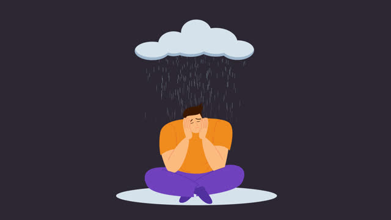

Sad
"There is hope, even when your brain tells you there isn't" -JOHN GREEN
"When you feel down, look above, God is there" -Unknown
Selamat merenungkan dan kami harap kata-kata di bawah bisa membantumu untuk terus berpengharapan!
"There is hope, even when your brain tells you there isn't" -JOHN GREEN
"When you feel down, look above, God is there" -Unknown
"Janganlah kuatir akan hari besok, karena hari besok mempunyai kesusahannya sendiri" -MATTHEW
"Stop doubting yourself! Make it happen and shock everyone" -CHIBIRD
"Even on your worst days, you are always worth love and respect" -HANNAH IRELAN
"You don't always need to be the best, but always be the good one" -CHIBIRD
"Be so happy that when others look at you, they become happy too" -Unknown
"Happiness is found when you stop comparing yourself to other people" -CHIBIRD
"Happiness is the secret to all beauty. There is no beauty without happiness" -Unknown